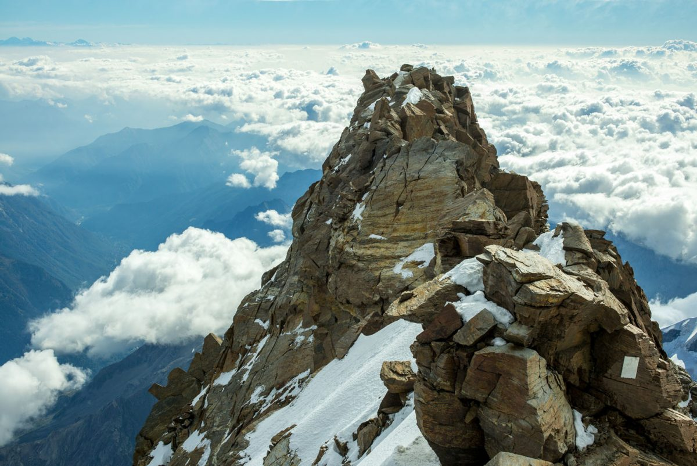
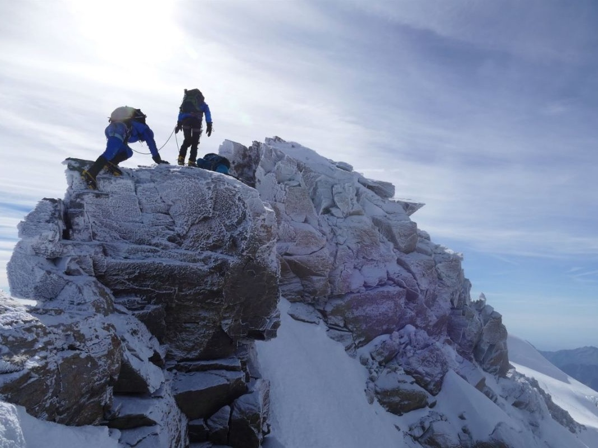
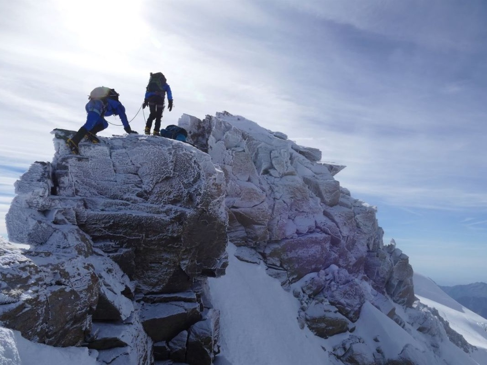

Voici quelques photos de la montagne:

Voici une photo de la somptueuse pointe Dufour, en prenant de la hauteur nous pouvons admirer aux mieux sa grandeur.
 

Sur ces deux images, vous pouvez obeserver la grande dame rocheuse sous différents angles.